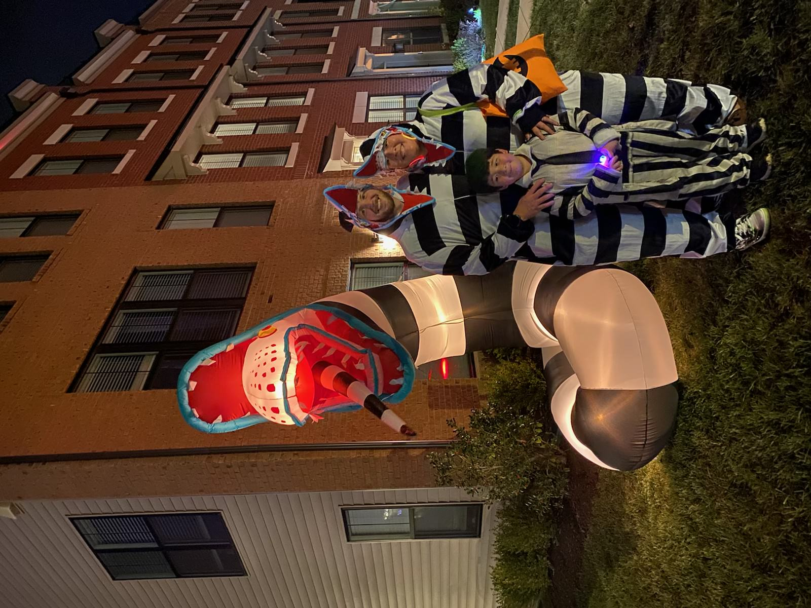

Life Experience
Most Notable Life Experience: Becoming a Mommy
Another notable life experience is being able to spend every holiday with my husband and son.
Our favorite holidays include:
We love to celebrate the holidays by decorating our home, cooking yummy food, and dressing up whenever possible.
Our favorite dish to make is my husband's broccolic, cheese, and rice casserole. We become disappointed the moment we run out of leftovers!
Ultimately, we really enjoying spending time with one another and our other cherised loved ones.